Research
I'm interested in Embodied AI, Multimodal Generation, and 3D Vision.
* denotes equal contribution; ^ denotes intern student; † denotes project leader; ✉ denotes corresponding author.
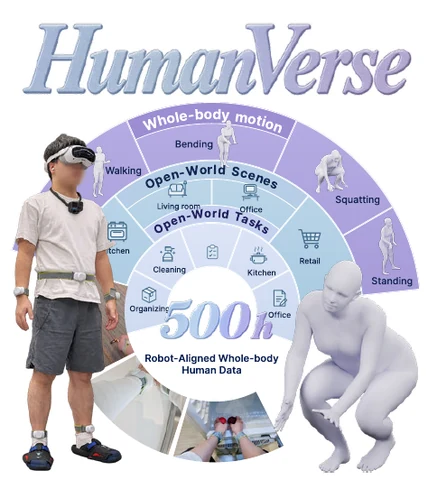
Lambda-humanoid Team
Technical Report, 2026
project page / paper / code
λ₀ learns whole-body humanoid loco-manipulation through egocentric pretraining, mid-training on the 500-hour HumanVerse dataset with human-to-humanoid alignment, and robot post-training. Scaling whole-body human data improves downstream task performance.
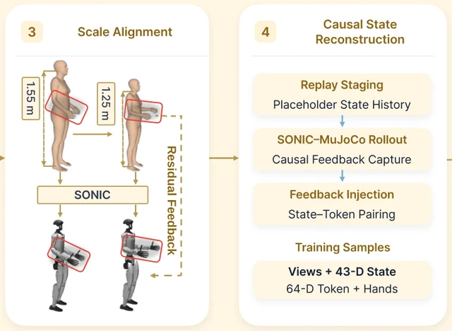
Yiming Jiang^, Jin Chen, Chongyang Xu, Yilun Chen†, Aimin Hao✉, Yisheng He†✉
Technical Report, 2026
project page / paper / code
EgoAlign adapts egocentric human demonstrations through controller-aware motion alignment and causal robot-state reconstruction, enabling human-only task training of VLA models and zero-shot deployment for long-range humanoid loco-manipulation. Cornerstone for λ₀.
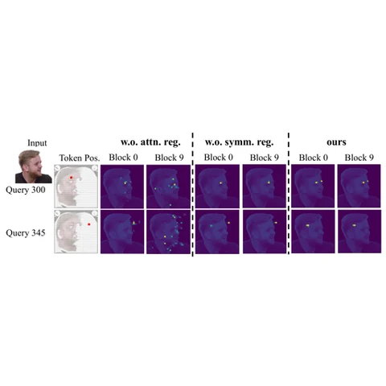
Yingdong Hu*^, Yisheng He*✉, Yiming Jiang, Zehong Lin, Steven Hoi, Jun Zhang
NeurIPS, 2026
paper
FA-LAM is a focus-aware large avatar model for one-shot animatable 3D Gaussian head and streaming 4D full-head reconstruction, with symmetric semantic attention regularization, a dual-phase training pipeline, and an autoregressive design with visibility-gated fusion.
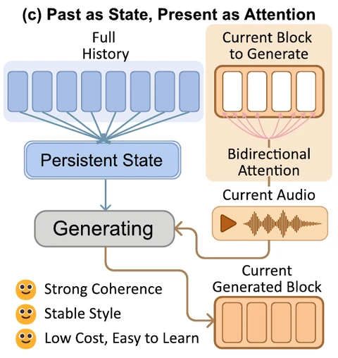
Yi Liu, Xiangyue Zhang, Jia Ma, Jianfang Li, Yisheng He, Jianqiang Ren
NeurIPS, 2026
conference page
PASPA compresses motion history into a persistent state and models each new segment with bidirectional attention within a blockwise flow-matching framework. This preserves motion style and temporal coherence over long speech sequences with fixed-size history memory.
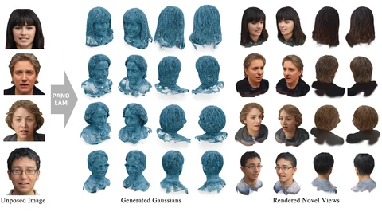
Peng Li*^, Yisheng He*✉, Yingdong Hu^, Yuan Dong, Weihao Yuan, Yuan Liu, Siyu Zhu, Gang Cheng, Zilong Dong, Yike Guo
TVCG, 2026
project page / paper / code
PanoLAM is a large avatar model for Gaussian full-head reconstruction from a single unposed image. It uses a coarse-to-fine, dual-branch framework to reconstruct a Gaussian full head in under a second.
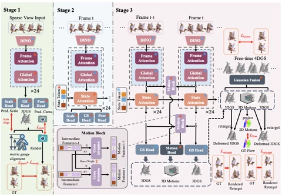
Yingdong Hu*^, Yisheng He*✉, Jinnan Chen, Weihao Yuan, Kejie Qiu, Zehong Lin, Siyu Zhu, Zilong Dong, Jun Zhang
ECCV, 2026
project page / paper / code 
Forge4D is the first feed-forward model for 4D human Gaussian reconstruction in real-world metric scale, and enables novel-view and novel-time synthesis from uncalibrated sparse-view videos in an efficient streaming manner.
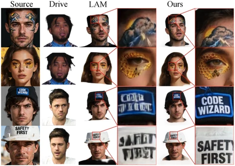
Yisheng He✉, Steven Hoi
CVPR, 2026
project page / paper
MeshLAM is a feed-forward framework for one-shot animatable mesh avatar reconstruction from a single image, using a dual shape‑texture architecture with iterative GRU decoding and reprojection‑based texture guidance.
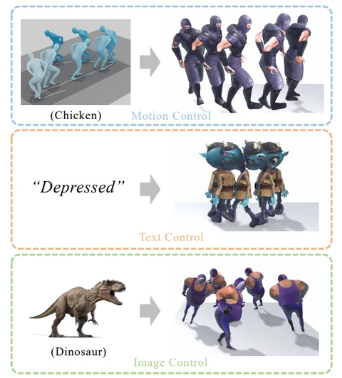
Zhe Li^, Yisheng He, Zhong Lei, Weichao Shen, Qi Zuo, Lingteng Qiu, Shenhao Zhu, Zilong Dong, Laurence T. Yang, Weihao Yuan
IEEE TIP, 2026
paper
We build a bidirectional control flow between the style and the content for stylized motion generation and enable multimodal style control including text, image, and style motions.
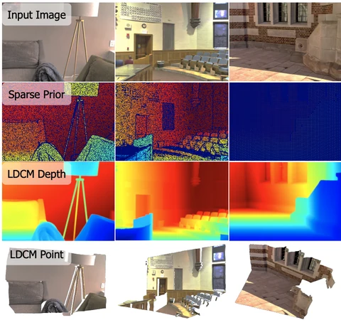
Zhu Yu, Zhengyi Zhao, Runmin Zhang, Lingteng Qiu, Kejie Qiu, Yisheng He, Siyu Zhu, Zilong Dong, Si-Yuan Cao, Hui-liang Shen
ICLR, 2026
project page / paper / code
LDCM is a transformer-based framework for metric-depth completion from sparse observations, with Poisson depth initialization and a point-map head to regress per‑pixel 3D coordinates without camera intrinsics.
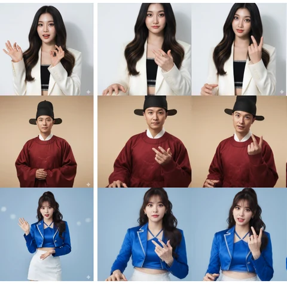
Fan Yang*, Heyuan Li*, Peihao Li, Weihao Yuan, Lingteng Qiu, Chaoyue Song, Cheng Chen, Yisheng He, Shifeng Zhang, Xiaoguang Han, Steven Hoi, Guosheng Lin
Preprint, 2025
project page / paper
ViSA integrates 3D reconstruction priors with a real-time autoregressive video diffusion model to generate photorealistic, temporally coherent upper-body avatars from a single image for gaming and VR.
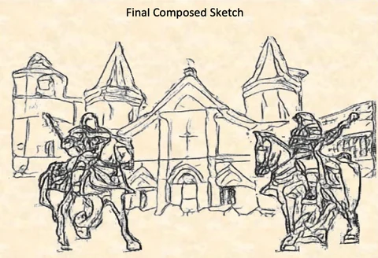
Ruohao Zhan*, Yijin Li*, Yisheng He, Shuo Chen, Yichen Shen, Xinyu Chen, Zilong Dong, Zhaoyang Huang, Guofeng Zhang
ACM MM, 2025
paper
CoProSketch enables fine-grained control and detailed sketch generation with diffusion models.
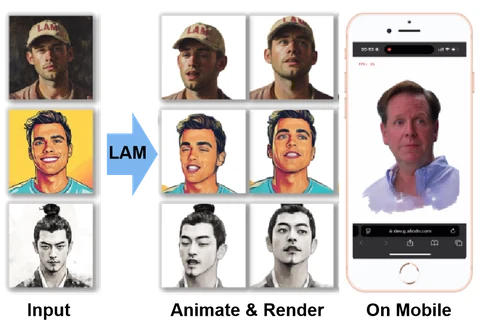
Yisheng He*, Xiaodong Gu*, Xiaodan Ye, Chao Xu, Zhengyi Zhao, Yuan Dong, Weihao Yuan, Zilong Dong, Liefeng Bo
SIGGRAPH, 2025
project page / paper / code 
LAM creates animatable Gaussian heads with one-shot images in a single forward pass, which can be reenacted and rendered on various platforms (including mobile phones) in real time.
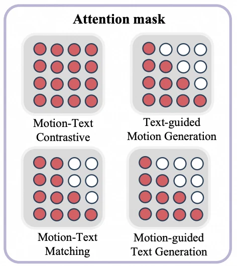
Zhe Li^, Weihao Yuan, Yisheng He, Lingteng Qiu, Shenhao Zhu, Xiaodong Gu, Weichao Shen, Yuan Dong, Zilong Dong, Laurence T. Yang
ICLR, 2025
project page / paper / code 
LaMP is a language-motion pretraining model that advances text-to-motion generation, motion-text retrieval, and motion captioning through aligned language-motion representation learning.
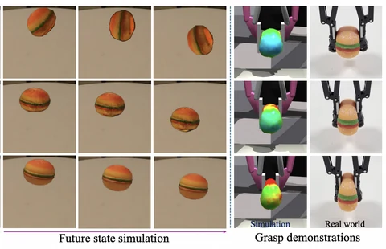
Junhao Cai^, Yuji Yang, Weihao Yuan, Yisheng He, Zilong Dong, Liefeng Bo, Hui Cheng, Qifeng Chen
NeurIPS, 2024 (Oral Presentation)
project page / paper / code 
We introduce a hybrid framework that leverages 3D Gaussian representation to advance physical property identification.
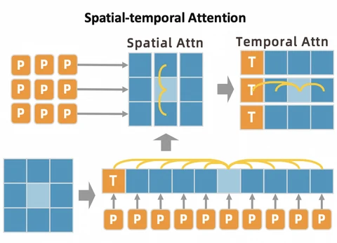
Weihao Yuan*, Yisheng He*, Weichao Shen, Yuan Dong, Xiaodong Gu, Zilong Dong, Liefeng Bo, Qixing Huang
NeurIPS, 2024
paper
We introduce a 2D joint VQ-VAE to quantize each joint instead of all joints into tokens. A spatial-temporal modeling framework with temporal-spatial 2D masking and 2D attention is also proposed for motion generation.
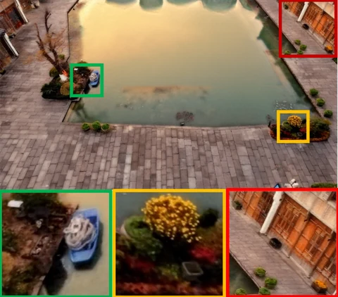
Yisheng He, Weihao Yuan, Siyu Zhu, Zilong Dong, Liefeng Bo, Qixing Huang
ECCV, 2024
project page / paper
We enable high-fidelity, transferable neural field editing with controllable edit intensity.
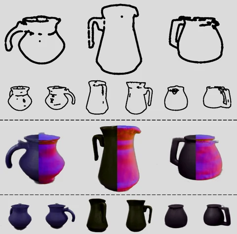
Minglin Chen^, Longguang Wang, Weihao Yuan, Yukun Wang, Zhe Sheng, Yisheng He, Zilong Dong, Liefeng Bo, Yulan Guo
arXiv, 2024
paper
Our method synthesizes consistent 3D content with fine-grained sketch control.
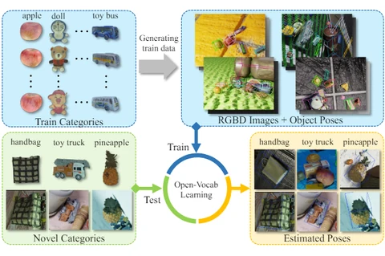
Junhao Cai*^, Yisheng He*, Weihao Yuan, Siyu Zhu, Zilong Dong, Liefeng Bo, Qifeng Chen
IEEE Robotics and Automation Letters (RA-L), 2024
project page / paper / code 
We introduce a new problem: open-vocabulary 9D object pose and size estimation, a new dataset: OO3D-9D, and a new framework based on a vision foundation model to tackle this problem.
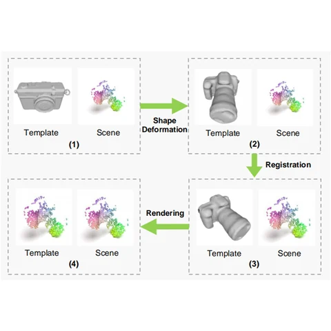
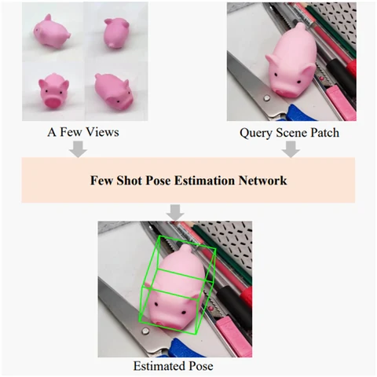
Yisheng He, Yao Wang, Haoqiang Fan, Jian Sun, Qifeng Chen
CVPR, 2022
project page / paper / data / code 
A new open-set few-shot 6D object pose estimation problem: estimating the 6D pose of an unknown object by a few support views without CAD models and extra training. A large-scale synthetic dataset for pre-training and benchmarks for future research.
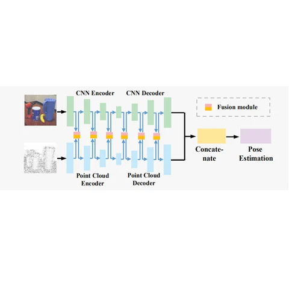
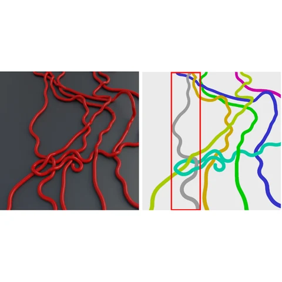
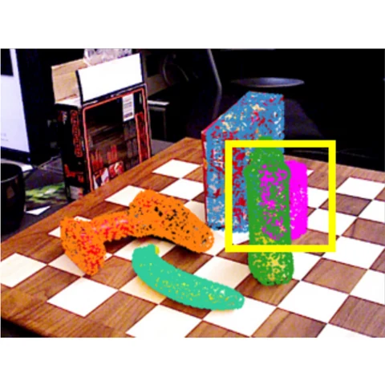
Experience
-
Tongyi Lab, Alibaba Group
-
Megvii Technology (Face++)
Supervisor: Dr. Jian Sun, Chief Scientist, Megvii Research
Mentor: Haoqiang Fan, Megvii Research
Collaborator: Dr. Haibin Huang, Megvii Research
Mentors: Haoqiang Fan and Dr. Yuzhi Wang, Megvii Research
-
Microsoft
Mentors: Raymond Xue and Hao Lin, Microsoft
Services
- Conference Reviewer
-
- IEEE/CVF Conference on Computer Vision and Pattern Recognition (CVPR)
- IEEE/CVF International Conference on Computer Vision (ICCV)
- European Conference on Computer Vision (ECCV)
- Conference on Neural Information Processing Systems (NeurIPS)
- International Conference on Learning Representations (ICLR)
- ACM SIGGRAPH Conference on Computer Graphics and Interactive Techniques (SIGGRAPH)
- ACM SIGGRAPH Conference and Exhibition on Computer Graphics and Interactive Techniques in Asia (SIGGRAPH Asia)
- AAAI Conference on Artificial Intelligence (AAAI)
- ACM International Conference on Multimedia (ACM MM)
- IEEE International Conference on Robotics and Automation (ICRA)
- IEEE/RSJ International Conference on Intelligent Robots and Systems (IROS)
- Journal Reviewer
-
- IEEE Transactions on Pattern Analysis and Machine Intelligence (TPAMI)
- International Journal of Computer Vision (IJCV)
- IEEE Transactions on Visualization and Computer Graphics (TVCG)
- IEEE Robotics and Automation Letters (RA-L)
- Neurocomputing
- Teaching @ HKUST
-
- COMP 4201 (Spring 2019)
- COMP 1029 (Fall 2020)
- COMP 4201 (Spring 2021)